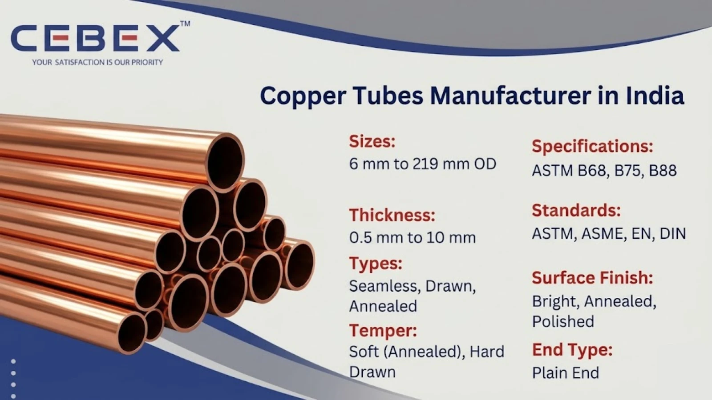

Leading Manufacturer & Exporter of Copper Tubes
Copper tubes play a critical role in industries requiring excellent thermal conductivity, corrosion resistance, and reliability. As a leading Copper Tube Manufacturer in India, CEBEX STEEL INDIA supplies precision-engineered copper tubes designed for HVAC, plumbing, heat exchangers, and industrial applications.
Copper is widely used due to its superior heat transfer properties, excellent formability, and natural resistance to corrosion and biofouling. These properties make copper tubes ideal for air conditioning systems, refrigeration, water supply lines, and condenser applications.
Our manufacturing process ensures high dimensional accuracy, smooth internal surfaces, and compliance with international standards, delivering long-lasting and efficient performance.

Selecting a reliable Copper Tube Manufacturer in India ensures consistent product quality and performance. CEBEX STEEL INDIA is known for its strong technical expertise, strict quality assurance systems, and global export capabilities.
We are ISO 9001:2015 certified and follow rigorous inspection procedures. Each tube undergoes dimensional inspection, eddy current testing, hydrostatic testing, and mechanical testing.
All tubes are fully traceable with heat numbers and batch records. Each shipment is supplied with EN 10204 3.1 / 3.2 Mill Test Certificates along with inspection and compliance documentation.
Our copper tubes are manufactured using high-quality raw materials and advanced processing techniques to ensure superior performance.
| Feature | Specification / Detail |
|---|---|
| Product Type | Copper Tubes |
| Specifications | ASTM B68, B75, B88 |
| Types | Seamless, Drawn, Annealed |
| Size Range | 6 mm to 219 mm OD |
| Thickness | 0.5 mm to 10 mm |
| Temper | Soft (Annealed), Hard Drawn |
| Standards | ASTM, ASME, EN, DIN |
| Surface Finish | Bright, Annealed, Polished |
| End Type | Plain End |
Copper tubes provide excellent thermal conductivity, corrosion resistance, and long service life.
We manufacture a wide range of copper tubes suitable for different applications. Each type is designed for durability, easy installation, and efficient heat transfer.
Copper tubes are available in multiple grades to suit various industrial and commercial applications.
| Grade | UNS No. | Description | Applications |
|---|---|---|---|
| C10100 | OFE Copper | Oxygen-Free Electronic Copper | Electrical, high conductivity |
| C10200 | OF Copper | Oxygen-Free Copper | Heat exchangers |
| C10300 | Oxygen-Free Copper | High purity copper | Industrial use |
| C11000 | ETP Copper | Electrolytic Tough Pitch | Plumbing, HVAC |
| C12200 | DHP Copper | Deoxidized High Phosphorus | Water supply, refrigeration |
| ASTM | UNS | EN | DIN | JIS |
|---|---|---|---|---|
| C11000 | ETP | Cu-ETP | 2.0065 | C1100 |
| C12200 | DHP | Cu-DHP | 2.0090 | C1220 |
| C10200 | OF | Cu-OF | 2.0040 | C1020 |
Copper tubes are available in high purity grades with controlled chemical composition for consistent performance.
| Grade | Cu (%) | P (%) | O (%) |
|---|---|---|---|
| C11000 | 99.90 min | ? | 0.02–0.04 |
| C12200 | 99.90 min | 0.015–0.040 | ? |
| C10200 | 99.95 min | ? | 0.001 max |
Our copper tubes offer excellent mechanical strength suitable for a wide range of industrial applications.
| Grade | Tensile Strength (MPa) | Yield Strength (MPa) | Elongation (%) |
|---|---|---|---|
| C11000 | 220–300 | 70–200 | 30–40% |
| C12200 | 200–360 | 70–250 | 30–40% |
| C10200 | 200–300 | 50–200 | 35–45% |
We manufacture copper tubes in a wide range of sizes suitable for industrial and commercial applications.
| OD (mm) | Thickness (mm) | Weight (kg/m) |
|---|---|---|
| 12.7 | 0.8 | 0.27 |
| 19.05 | 1.0 | 0.53 |
| 25.4 | 1.2 | 0.85 |
| 38.1 | 1.5 | 1.68 |
| 50.8 | 2.0 | 2.95 |
Custom sizes and thicknesses are available as per project requirements.
Copper tubes are widely used in industries requiring efficient heat transfer and corrosion resistance, including:
Their antimicrobial properties also make them suitable for potable water systems.
All copper tubes undergo strict quality control procedures including dimensional inspection, eddy current testing, hydrostatic testing, and mechanical testing.
Each product is supplied with EN 10204 3.1 certification ensuring compliance and traceability.
Copper tubes are packed in wooden boxes, coils, or bundles with protective wrapping to prevent damage. Each tube is marked with grade, size, and heat number.
We provide complete export documentation for smooth international shipping.
As a leading Copper Tube Manufacturer in India, we export high-quality tubes to Africa including Nigeria, Egypt, Kenya, South Africa, and Ethiopia. Our products are widely used in HVAC, infrastructure, and industrial projects across the region. Visit our Africa Copper Tube Exporter page.
We offer a comprehensive range of high-performance industrial tubes designed to meet diverse application requirements across industries.
| Tube Type | Description |
|---|---|
| SS Tube | General-purpose stainless steel tubes |
| Duplex 2205 Tube | High-strength corrosion-resistant tubes |
| Super Duplex Tube | Extreme environment applications |
| Nickel Alloy Tube | High-temperature resistant tubes |
| Inconel Tube | Heat-resistant alloy tubes |
| Monel Tube | Marine-grade nickel-copper tubes |
| Hastelloy Tube | Chemical-resistant alloy tubes |
| Titanium Tube | Lightweight high-strength tubes |
| Carbon Steel Tube | Structural and pressure systems |
| Alloy Steel Tube | Heavy-duty alloy steel tubes widely used in boilers, heat exchangers, and structural applications |
| 254 SMO Tubes | Super austenitic corrosion-resistant tubes |
Our clients choose CEBEX STEEL INDIA for our technical expertise, commitment to quality, and responsive service. We offer direct-from-manufacturer pricing, flexible order quantities, and comprehensive after-sales support. Our engineering team is available to assist with material selection, specification review, and custom design, ensuring that you receive the optimal solution for your application.
C12200 (DHP Copper) is widely used for plumbing due to its excellent corrosion resistance and ease of fabrication.
Yes, copper tubes are widely used in HVAC and refrigeration due to their excellent thermal conductivity and durability.
Annealed tubes are soft and flexible for bending, while hard tubes are rigid and used in structural applications.
Our copper tubes comply with ASTM B68, B75, B88, ASME, EN, and DIN standards.
Yes, all products are supplied with EN 10204 3.1 certification along with inspection reports.